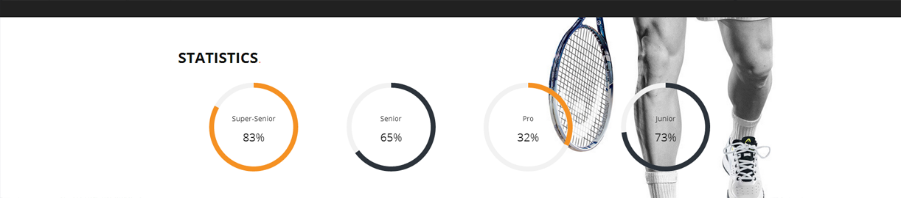
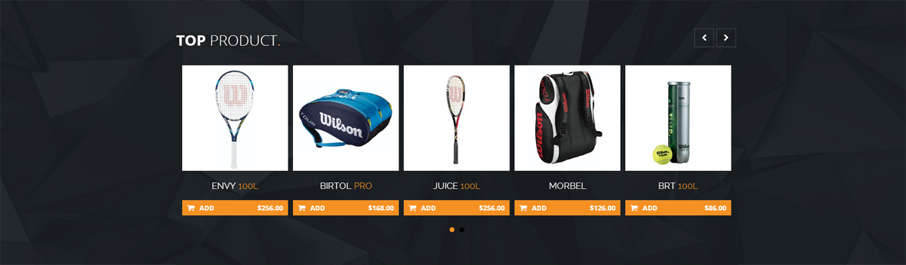

Created: 04/05/2014
By: Corsaro
Thank you for purchasing my theme. If you have any questions that are beyond the scope of this help file, please feel free to email via my user page contact form here. Thanks so much!
Layout Responsive all divided into section part of page.
This theme is perfectly responsive and mobile optimized.
For change color at your template need to add at other page the css green or blue and remove the css style_dir
This circolar statistic
This is code inside the file javascript inside folder circle where you setting the parameters
Plugin.defaults = {
namespace: 'asPieProgress',
min: 0,
max: 100,
goal: 100,
size: 180,
speed: 15, // speed of 1/100
barcolor: '#f59123',
barsize: '4',
trackcolor: '#f2f2f2',
fillcolor: 'none',
easing: 'ease',
numberCallback: function(n) {
var percentage = this.getPercentage(n);
return percentage + '%';
},
contentCallback: null
};
But you can setting the color inside the code html, in thi mode
data-goal="83" //this is fot percentage number
data-barcolor="#f59123" // this is for setting color
The tabs for the top score use this script, the saem for table you find in results
jQuery(document).ready(function () {
jQuery('.tabs .tab-links a').on('click', function (e) {
var currentAttrValue = jQuery(this).attr('href');
// Show/Hide Tabs
jQuery('.tabs ' + currentAttrValue).slideDown(400).siblings().slideUp(400);
// Change/remove current tab to active
jQuery(this).parent('li').addClass('active').siblings().removeClass('active');
e.preventDefault();
});
});
Fo more info and details it s this web site
Go to siteThe tabs have different effect need only to change this part
DEFAULT:
// Show/Hide Tabs
jQuery('.tabs ' + currentAttrValue).show().siblings().hide();
FADE:
// Show/Hide Tabs
jQuery('.tabs ' + currentAttrValue).fadeIn(400).siblings().hide();
SLIDE 1:
// Show/Hide Tabs
jQuery('.tabs ' + currentAttrValue).siblings().slideUp(400);
jQuery('.tabs ' + currentAttrValue).delay(400).slideDown(400);
SLIDE 2:
// Show/Hide Tabs
jQuery('.tabs ' + currentAttrValue).slideDown(400).siblings().slideUp(400);
This is a tipical box slider and this work with this code js you find down in the page index for modify the number the slide min and max, but inside the file bxslider you find more option

$('#product').bxSlider({
minSlides: 3,
maxSlides: 5,
slideWidth: 215,
slideMargin: 10
});
Replace you email inside $to
$to = "yourmail@gmail.com";
$name = $_POST['name'];
$message = $_POST['message'];
$from = $_POST['email'];
$headers = "From:" . $from;
mail($to,$name,$message,$headers);
echo "Mail Sent.";
Css in file style_dir you find all comment for website structure
/***** CSS STRUCTURE INDEX ****/
/*****
LOGIN TOP
SUMMARY BODY
TOP MATCH (Tabs, Tab Links, Content of Tabs)
TOP NEWS
TOP PRODUCT
TOP VIDEO
*****/
/***** CSS STRUCTURE PAGES ****/
/*****
PAGE TOURNAMENTS
PAGE PLAYERS ( Countdown )
PAGE NEWS
PAGE VIDEO
PAGE SINGLE MATCH
PAGE SHOP ( Zoom )
SPONSOR
RIGHT COLUMN
LOGIN REGISTER PAGES
ALL MATCHES
CONTACT
FOOTER
HOME 2 WITH COUNTDOWN
******/
Once again, thank you so much for purchasing this theme. As I said at the beginning, I'd be glad to help you if you have any questions relating to this theme. No guarantees, but I'll do my best to assist. If you have a more general question relating to the themes on ThemeForest, you might consider visiting the forums and asking your question in the "Item Discussion" section.
Corsaro